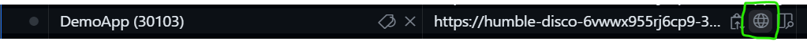
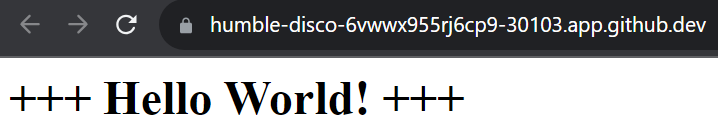
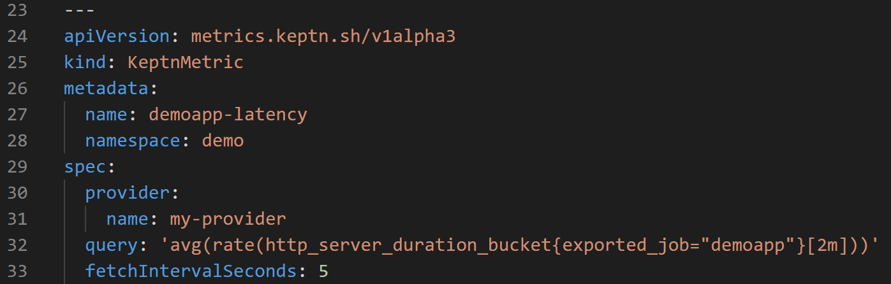
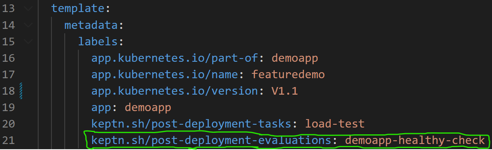

4. What Just Happened?
The system is now successfully running. If you look at the demo-application in Argo you will see a few things:
- The
demoapppod is runnning - The
demoapppod belongs to a deployment - The deployment is healthy and has a service attached and an ingress
All of this means that the application is accessible.
In the codespace, go to the Ports tab again, hover over the DemoApp and click the Globe icon to view the demo application user interface.
 
Inside demo-application the Argo application, you will also notice a some Keptn related items:
- A
KeptnWorkloadhas been created - An instance of a
KeptnWorkload(aKeptnWorkloadInstance) also exists - A
KeptnTaskentity calledpost-load-testexists - The
post-load-testcreated aJoband thatJobcreated apod - A
KeptnEvaluationentity calledpost-eval-demoapp-healthyexists

So what is going on?
The progressive delivery stack includes the Keptn.
Keptn performs multiple functions:
- Automatically calculating deployment DORA metrics for deployments it "manages"
- Automatically creates OpenTelemetry traces for deployments it "manages"
- Adds the ability to perform pre-deployment and post-deployment SLO evaluations and tasks (explained below)
- Acts as a central on-cluster metrics cache so operators can retrieve metrics without the need to know their source and other on-cluster tools (such as HPA) can utilise these metrics in a generic way
An application is "managed" by Keptn as such:
- The namespace of the application is annotated (see this here)
- 3x annotations (or labels) are added to the application. These are the Kubernetes recommended labels
part-of,nameandversion(see this here)


With these 4 annotations, Keptn is able to customise the Kubernetes scheduler and thus "know" when a pod is ready to be schedule and then when a pod is successfully schedule. This is how Keptn generates DORA metrics.
Keptn calculates the length of time each "managed" deployment takes. Later you will see these DORA metrics in Grafana.
KeptnTasks
Another capability of Keptn are pre and post deployment evaluations and tasks. These also rely on annotations and CRDs. First, let's explore KeptnTasks
- Define a
KeptnTaskwhich is a custom piece of logic that you want to perform during the pod scheduling lifecycle (see this here). This task starts ak6container and executes a load test.

- Add an annotation or label to the deployment which denotes when this task should occur, before pod scheduling or after pod scheduling (see this here).
This configuration tells Keptn that a
KeptnTaskcalledload-testshould be executed after the deployment has completed.

KeptnTasks are executed as Kubernetes Jobs so the above configuration explains why we see the KeptnTask, Job and a Pod in ArgoCD.
KeptnEvaluations
As explained previously the Keptn Lifecycle Toolkit also provides a way to run SLO evaluations of metrics before and / or after deployment.
- Create a
KeptnMetricsProviderwhich defines where the metric should be retrieved from (see this here)

- Create a
KeptnMetricwhich defines which metric should be pulled and how often (see this here)

- Create a
KeptnEvaluationDefinitionto define the acceptance criteria. In other words, for a metric, what is the acceptable threshold (see this here)

- Add a label to the deployment to inform Keptn that a given
KeptnEvaluationDefinitionshould occur either before or after deployment. In this case, after (post) deployment (see this here)

➡️ Next: View Telemetry ➡️